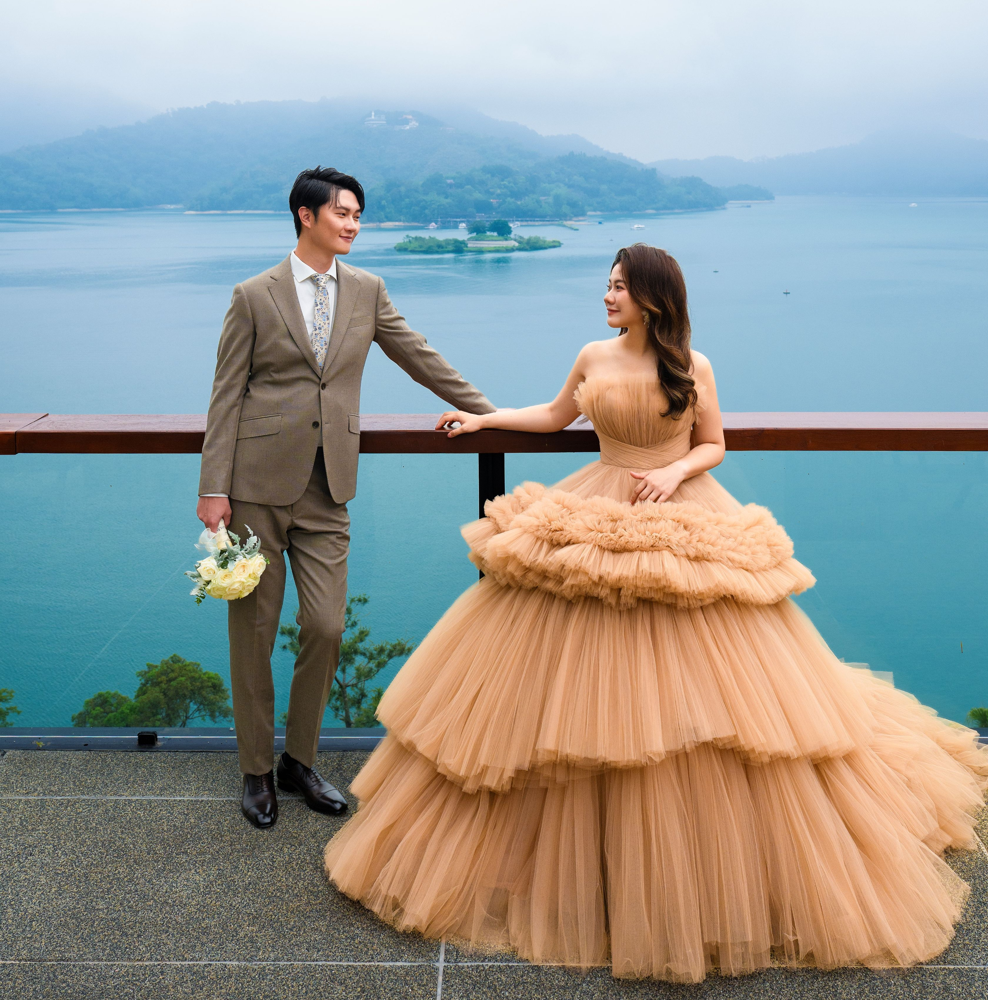

Our Wedding Day
陳品霖 + 謝佳臻
婚宴時間
交通資訊
出席回覆

陳品霖 PETER & JANE 謝佳臻
SEPTEMBER 19, 2026
2026 年 9 月 19 日
星期六 上午 11:30
台中勤美洲際酒店 3F
InterContinental Taichung
00
DAYS
00
HOURS
00
MINS
00
SECS
WEDDING BANQUET
2026 年 9 月 19 日 星期六
上午 11:30 迎賓酒會 & 入席
中午 12:00 準時開席
台中勤美洲際酒店 3F
台中市西區館前路77號
【停車資訊】
賓客可停放於台中勤美洲際酒店地下停車場。
婚宴賓客享免費停車優惠至當日晚間 12:00。
* 停車位有限，依現場剩餘車位提供，敬請見諒。
Google 地圖導航
RSVP
為了方便安排婚宴座位，請於 2026 年 8 月 15 日前填寫出席意願表單，期待與您分享我們的喜悅。
填寫出席回覆